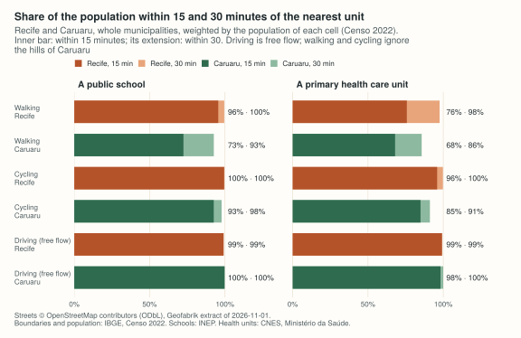
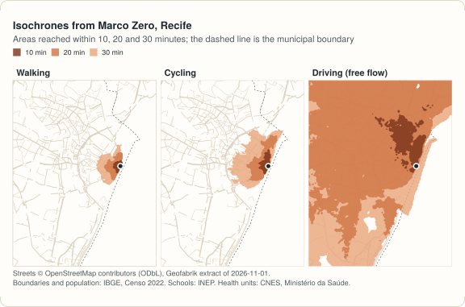
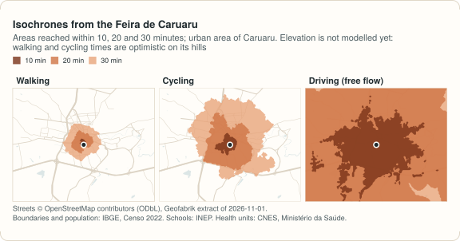

Example: access to schools and health care in Recife and Caruaru¶
The other examples use small sample networks. This one starts from nothing, as a study of a real city would: it downloads the streets of two cities of Pernambuco, Brazil, from OpenStreetMap, places their residents on a grid with the census, takes the public schools and the primary health care units from the official registers, and measures how long it takes to reach the nearest of each, walking, cycling and driving.
- Recife, the state capital (1.49 million people in the Censo 2022), on the coast, flat, crossed by rivers. Its street network is cut with 10 km around the municipality, which takes in the core of the metropolitan area (Olinda, Jaboatão dos Guararapes, Camaragibe and parts of Paulista and São Lourenço da Mata), so trips near the border can end in a neighbouring municipality.
- Caruaru, 130 km inland in the Agreste (378 thousand people), a compact city in a large, mostly rural municipality, with 5 km around it.
The code blocks make one script, and every step works for any Brazilian
municipality: change the IBGE code and the buffer. The output shown under
each block is what it prints; it was computed on 2026-11-11. It needs
geopandas 1.0 or later and, to cut the extract,
osmium (brew install osmium-tool,
apt install osmium-tool, or conda-forge).

site/figures/pernambuco.R in the repository.Streets only
No public, openly licensed GTFS feed was found for the buses of the
Grande Recife Consórcio de Transporte or the metro (CBTU): it is not on
the open-data portals of the city, the state or CBTU, nor in the
Mobility Database. Caruaru has none either. So this example routes on
the streets, and leaves public transport out rather than approximate
it. With a GTFS feed, the same code takes mode=["WALK", "TRANSIT"]
and a departure time: the
Recife metropolitan region example
does that, with the feed the consortium publishes on its own site
(found after this page was written; it states no licence).
The data¶
| Data | Source | Licence |
|---|---|---|
| Streets | OpenStreetMap, extract of the Nordeste region by Geofabrik, dated 2026-11-01 (445 MB) | ODbL 1.0 |
| Municipal boundaries | IBGE, malhas municipais (API, version 3) | public data, IBGE |
| Population | IBGE, Censo Demográfico 2022, census tracts with their population, variable v0001 (44 MB for Pernambuco) |
public data, IBGE |
| Schools | INEP, Catálogo de Escolas 2023, with the coordinates of each school, as published by Ipea's geobr (schools_2023, 101 MB for Brazil) |
public data, INEP; geobr is MIT |
| Health units | CNES, Ministério da Saúde, through OpenDataSUS (cnes_estabelecimentos_csv.zip, 57 MB for Brazil, updated daily; downloaded on 2026-11-11) |
open data, Ministério da Saúde |
The files are downloaded once into a directory of their own (set
PEABIRU_EXAMPLE_DATA to keep it somewhere else):
import gzip
import os
import shutil
import subprocess
import urllib.request
import zipfile
from pathlib import Path
import geopandas as gpd
import numpy as np
import pandas as pd
from shapely.geometry import Polygon
import peabiru
data_dir = Path(os.environ.get("PEABIRU_EXAMPLE_DATA", "pe-data"))
raw = data_dir / "raw"
raw.mkdir(parents=True, exist_ok=True)
def fetch(url, name=None):
dest = raw / (name or url.rsplit("/", 1)[1])
if not dest.exists():
part = dest.with_suffix(".part")
with urllib.request.urlopen(url) as response, open(part, "wb") as out:
# IBGE's API sends its answer gzip-compressed, asked or not
gz = response.headers.get("Content-Encoding") == "gzip"
shutil.copyfileobj(gzip.GzipFile(fileobj=response) if gz else response, out)
part.rename(dest)
return dest
nordeste = fetch("https://download.geofabrik.de/south-america/brazil/nordeste-261101.osm.pbf")
tracts_file = fetch("https://ftp.ibge.gov.br/Censos/Censo_Demografico_2022/"
"Agregados_por_Setores_Censitarios/malha_com_atributos/"
"setores/gpkg/UF/PE/PE_setores_CD2022.gpkg")
schools_file = fetch("https://www.ipea.gov.br/geobr/data_gpkg/schools/2023/schools_2023.gpkg")
cnes_file = fetch("https://s3.sa-east-1.amazonaws.com/ckan.saude.gov.br/CNES/"
"cnes_estabelecimentos_csv.zip")
cities = pd.DataFrame({"key": ["recife", "caruaru"],
"code": ["2611606", "2604106"], # IBGE codes
"buffer": [10000, 5000]}) # metres
utm = 31985 # SIRGAS 2000 / UTM zone 25S, in metres, for both cities
Streets: the municipality and a buffer¶
The boundary of each municipality comes from IBGE's API. Buffered in
metres, it is the polygon osmium extract cuts the regional extract with;
the cut goes in a directory of its own, which build_network() reads.
def boundary_of(code):
url = ("https://servicodados.ibge.gov.br/api/v3/malhas/municipios/" + code +
"?formato=application/vnd.geo+json&qualidade=maxima")
b = gpd.read_file(fetch(url, f"{code}.geojson"))
return b.to_crs(utm).make_valid()
def cut_streets(key, boundary, buffer):
folder = data_dir / key / "network"
folder.mkdir(parents=True, exist_ok=True)
polygon = data_dir / key / "cut.geojson"
# 30 segments per quarter circle, as sf's st_buffer()
gpd.GeoSeries(boundary.buffer(buffer, quad_segs=30)).to_crs(4326).to_file(polygon)
pbf = folder / f"{key}.osm.pbf"
subprocess.run(["osmium", "extract", "--overwrite", "-p", str(polygon),
str(nordeste), "-o", str(pbf)], check=True)
return folder
boundaries = {k: boundary_of(c) for k, c in zip(cities["key"], cities["code"])}
networks = {}
for k, b in zip(cities["key"], cities["buffer"]):
folder = cut_streets(k, boundaries[k].geometry, b)
networks[k] = peabiru.build_network(folder)
print(k, f"{(folder / f'{k}.osm.pbf').stat().st_size / 1e6:.1f} MB", networks[k].info())
recife 16.0 MB {'vertices': 104331, 'edges': 275968, 'feeds': [], 'stops': 0, 'patterns': 0, 'services': 0, 'frequencies': False}
caruaru 1.9 MB {'vertices': 28445, 'edges': 78318, 'feeds': [], 'stops': 0, 'patterns': 0, 'services': 0, 'frequencies': False}
Where people live: a hexagonal grid with the census¶
The census counts people by tract, and tracts vary from a city block to hundreds of square kilometres. A regular grid makes the cities comparable: hexagons 500 m apart, numbered row by row from the south-west, over the whole municipality. Each cell gets the population of the tracts it covers, in proportion to the area it covers of each.
def hex_grid(area, spacing=500):
xmin, ymin, xmax, ymax = area.total_bounds
h = spacing * np.sqrt(3) / 2
r = spacing / np.sqrt(3)
k = np.radians(30 + 60 * np.arange(7)) # pointy side up
cells = []
for j in range(-1, int(np.ceil((ymax - ymin) / h)) + 2):
for i in range(-1, int(np.ceil((xmax - xmin) / spacing)) + 2):
x = xmin + i * spacing + (j % 2) * spacing / 2
y = ymin + j * h
cells.append(Polygon(zip(x + r * np.cos(k), y + r * np.sin(k))))
cells = gpd.GeoSeries(cells, crs=area.crs)
cells = cells[cells.intersects(area.union_all())].reset_index(drop=True)
return gpd.GeoDataFrame({"id": np.arange(1, len(cells) + 1)}, geometry=cells)
def population_grid(code, boundary):
tracts = gpd.read_file(tracts_file, where=f"CD_MUN = '{code}'", columns=["v0001"])
tracts = tracts.to_crs(utm)
tracts["geometry"] = tracts.make_valid()
tracts["tract_area"] = tracts.area
cells = hex_grid(boundary)
parts = gpd.overlay(cells, tracts, how="intersection", keep_geom_type=True)
parts["people"] = parts["v0001"] * parts.area / parts["tract_area"]
cells["population"] = cells["id"].map(parts.groupby("id")["people"].sum()).fillna(0)
centres = cells.centroid.to_crs(4326)
cells["lon"], cells["lat"] = centres.x.round(6), centres.y.round(6)
cells["id"] = cells["id"].astype(str)
return cells[cells["population"] > 0]
grids = {}
for k, code in zip(cities["key"], cities["code"]):
grids[k] = population_grid(code, boundaries[k])
print(f"{k:8} {len(grids[k]):5} cells, {grids[k]['population'].sum():,.0f} people")
recife 1107 cells, 1,488,797 people
caruaru 4489 cells, 378,048 people
The Censo 2022 counts 1,488,924 people in Recife and 378,048 in Caruaru; the grid keeps all but 127 in Recife, in tracts that reach slightly outside IBGE's municipal boundary. Caruaru's grid has four times as many cells as Recife's for a quarter of the people: most of the municipality is rural, and its large rural tracts spread a few people over each cell.
Schools and health units¶
Schools: those of INEP's catalogue that are public (municipal, state or federal) and open with no restriction, and have coordinates. Health units: the CNES establishments of types 1 (posto de saúde) and 2 (centro de saúde / unidade básica), the primary health care units of the SUS, that are active and have coordinates. Both are taken over the whole area cut from OpenStreetMap, so the nearest unit can be across the municipal border, as it often is for people living near it.
def cut_area(key):
return gpd.read_file(data_dir / key / "cut.geojson").to_crs(4674).union_all()
def schools_in(area):
s = gpd.read_file(
schools_file, bbox=area.bounds,
columns=["code_school", "name_school", "name_muni"],
where="admin_category = 'Pública' AND service_restriction = "
"'ESCOLA EM FUNCIONAMENTO E SEM RESTRIÇÃO DE ATENDIMENTO'",
)
s = s[~s.geometry.is_empty & s.intersects(area)]
return pd.DataFrame({"id": s["code_school"].astype(str), "name": s["name_school"],
"municipality": s["name_muni"],
"lon": s.geometry.x, "lat": s.geometry.y}).reset_index(drop=True)
with zipfile.ZipFile(cnes_file) as z, z.open("cnes_estabelecimentos.csv") as f:
cnes = pd.read_csv(f, sep=";", encoding="latin1", dtype=str, keep_default_na=False,
usecols=["CO_CNES", "CO_UF", "CO_IBGE", "NO_FANTASIA", "TP_UNIDADE",
"CO_MOTIVO_DESAB", "NU_LATITUDE", "NU_LONGITUDE"])
cnes = cnes[(cnes["CO_UF"] == "26") & cnes["TP_UNIDADE"].isin(["1", "2"])
& (cnes["CO_MOTIVO_DESAB"] == "") & (cnes["NU_LATITUDE"] != "")]
def health_in(area):
h = pd.DataFrame({"id": cnes["CO_CNES"], "name": cnes["NO_FANTASIA"],
"municipality_code": cnes["CO_IBGE"],
"lon": cnes["NU_LONGITUDE"].astype(float),
"lat": cnes["NU_LATITUDE"].astype(float)})
inside = gpd.GeoSeries(gpd.points_from_xy(h["lon"], h["lat"])).intersects(area).values
return h[inside].reset_index(drop=True)
schools = {k: schools_in(cut_area(k)) for k in cities["key"]}
health = {k: health_in(cut_area(k)) for k in cities["key"]}
print(pd.DataFrame({k: {"schools": len(schools[k]), "health_units": len(health[k])}
for k in cities["key"]}))
recife caruaru
schools 937 216
health_units 511 102
A few things to know about these registers, seen while preparing them:
- Of the public schools in operation, 22 of 486 in Recife and 15 of 168 in Caruaru have no coordinates in the catalogue and cannot be placed; they are left out.
- Of the 167 active primary care units registered in Recife, six have coordinates outside the municipality: four a few hundred metres across the border, but one 24 km away, on the Ilha de Itamaracá, and one 20 km away, in Moreno. In Caruaru, two of 75 do, one of them 5 km out. Taking units by where they are rather than where they are registered keeps the far ones out of these figures (they fall outside the cut area), but those units are missing from their own neighbourhoods.
- Schools and health units sit close to the streets of the extract: the median distance to the nearest street is 7 to 16 m, and a single school in each city is more than 300 m from one (418 m in Recife, 574 m in Caruaru), well within the 1.6 km at which peabiru links a point to the street network.
Travel time to the nearest school and health unit¶
One travel-time matrix per city, mode and kind of unit, from every cell to
every unit; the smallest time of each cell is its time to the nearest one.
Driving is free flow (no congestion), and these networks are built without
an elevation raster (a .tif raster in the data directory adds slope
costs, see build_network()). The
terrain example
of the R site recomputes the shares below with slopes: on foot, within 15
minutes of a health unit, Recife goes from 75.8% to 73.7% and Caruaru from
68.0% to 65.8%, and within 30 minutes or by bicycle very little changes.
def nearest(k, mode, limit):
out = grids[k][["id", "lon", "lat", "population"]].copy()
for what, units in [("schools", schools[k]), ("health", health[k])]:
m = peabiru.travel_time_matrix(networks[k], out, units, mode=mode,
max_trip_duration=limit)
out[what] = out["id"].map(m.groupby("from_id")["travel_time_p50"].min())
return out # NaN: none within the limit
def share_within(t, minutes):
return [round(100 * t["population"][t[what] <= minutes].sum() / t["population"].sum(), 1)
for what in ["schools", "health"]]
rows = []
for k in cities["key"]:
for mode in ["WALK", "BICYCLE", "CAR"]:
t = nearest(k, mode, limit=60)
rows.append([k, mode, *share_within(t, 15), *share_within(t, 30)])
shares = pd.DataFrame(rows, columns=["city", "mode", "school_15", "health_15",
"school_30", "health_30"])
print(shares)
city mode school_15 health_15 school_30 health_30
0 recife WALK 95.6 75.8 99.6 97.5
1 recife BICYCLE 99.5 96.0 99.8 99.8
2 recife CAR 99.2 99.2 99.2 99.2
3 caruaru WALK 72.5 68.0 92.7 85.7
4 caruaru BICYCLE 92.7 84.9 97.9 91.1
5 caruaru CAR 99.8 98.2 100.0 99.9
The table is the share of the population (in %) within 15 and 30 minutes of the nearest public school and primary health care unit. In Recife, 96% of the people live within 15 minutes' walk of a public school and 76% of a health unit; in Caruaru, 73% and 68%. On a bicycle the gap narrows; by car, with free-flowing traffic, nearly everyone is within 15 minutes of both.
Recife's driving shares stop at 99.2% for a reason worth knowing: from 17 cells of Boa Viagem (about 12 thousand residents on this grid) there is no car route to the rest of the network on this extract, although the streets connect on foot and by bicycle. Removing every turn restriction from the extract does not reconnect them; the cause is in how the OpenStreetMap data of that area is read for cars, and is not identified yet. Checks like this one (cells or units that a mode never reaches) are worth running on any new extract.


How many units within reach¶
The nearest unit is one measure; how many units are within reach is
another, which accessibility()
computes directly: here, the public schools within 15 minutes' walk of each
cell, and the average over the population.
for k in cities["key"]:
a = peabiru.accessibility(networks[k], grids[k][["id", "lon", "lat"]],
schools[k].assign(n=1), opportunities_colnames=["n"],
mode="WALK", cutoffs=15)
people = a["id"].map(grids[k].set_index("id")["population"])
print(k, round((a["accessibility"] * people).sum() / people.sum(), 1))
recife 4.6
caruaru 2.6
On average, a resident of Recife has between four and five public schools within a quarter of an hour on foot; one of Caruaru, between two and three.
Isochrones from the centre¶
From Marco Zero, in Recife's old centre, and from the Feira de Caruaru, the area reached in 10, 20 and 30 minutes by each mode, in square kilometres:
centres = {
"recife": pd.DataFrame({"id": ["Marco Zero"], "lon": [-34.8709722], "lat": [-8.063374]}),
"caruaru": pd.DataFrame({"id": ["Feira de Caruaru"], "lon": [-35.9713866],
"lat": [-8.2897512]}),
}
rows = []
for k in cities["key"]:
for mode in ["WALK", "BICYCLE", "CAR"]:
iso = peabiru.isochrone(networks[k], centres[k], mode=mode,
cutoffs=[10, 20, 30], zoom=11)
# the polygons come as traced, which can touch themselves: made valid
# before measuring, as R's isochrone() returns them
for minutes, km2 in zip(iso["isochrone"], iso.to_crs(utm).make_valid().area / 1e6):
rows.append([k, mode, int(minutes), round(km2, 1)])
iso = pd.DataFrame(rows, columns=["city", "mode", "minutes", "km2"])
print(iso.pivot_table(index=["city", "mode"], columns="minutes", values="km2"))
minutes 10 20 30
city mode
caruaru BICYCLE 1.2 8.9 23.4
CAR 22.1 248.9 696.4
WALK 0.1 1.5 4.7
recife BICYCLE 0.8 3.0 8.2
CAR 5.7 112.5 367.6
WALK 0.4 1.3 3.0
One number here depends on more than routing: the 20-minute driving polygon
of Caruaru has dozens of holes (pockets of the grid not reached in time) that
touch each other. isochrone() returns the polygons as traced, and
make_valid() (GEOS, in metres) repairs them keeping those holes: 248.9 km².
The R package returns its polygons made valid with
sf::st_make_valid() on longitude and latitude (s2), which merges many of
the holes into the polygon: 285.9 km² in the
R example. The other polygons agree
to 0.1 km².


A map¶
Each cell drawn as a dot at its centre, coloured by the walking time to the nearest health unit (needs matplotlib):
import matplotlib
matplotlib.use("Agg")
import matplotlib.pyplot as plt
walk = nearest("recife", "WALK", limit=60)
fig, ax = plt.subplots(figsize=(6, 7))
dots = ax.scatter(walk["lon"], walk["lat"], c=walk["health"].fillna(60), s=12,
cmap="OrRd_r", vmin=0, vmax=30)
ax.set_aspect(1 / np.cos(np.radians(8)))
ax.set_axis_off()
fig.colorbar(dots, ax=ax, shrink=0.6, label="minutes to the nearest health unit, walking")
fig.savefig("recife-health.png", dpi=110, bbox_inches="tight")
Variations¶
- Another municipality. Change
cities: the IBGE code (fromhttps://servicodados.ibge.gov.br/api/v1/localidades/municipios), the buffer, the state of the census tracts (UF/PE/PE_setores_CD2022.gpkg) and of the CNES rows (CO_UF), and the Geofabrik region. - Large matrices on disk. With
output_dir,travel_time_matrix()andaccessibility()write one CSV file per origin instead of returning a data frame: the 4,489 × 216 driving matrix of Caruaru never has to fit in memory. - Gradual access.
decay_function="logistic"(or"exponential","linear") inaccessibility()weighs each school by its distance in time instead of counting those under a hard limit. - Public transport. With a GTFS feed in the network directory, the same
calls take
mode=["WALK", "TRANSIT"], adeparture_datetimeand atime_window. - A browser map. The isochrone demo has the streets of Recife and of the urban area of Caruaru and draws isochrones wherever you click.
Map data © OpenStreetMap contributors, under the ODbL; boundaries and population © IBGE; schools: INEP (Catálogo de Escolas 2023, via geobr); health units: CNES, Ministério da Saúde.